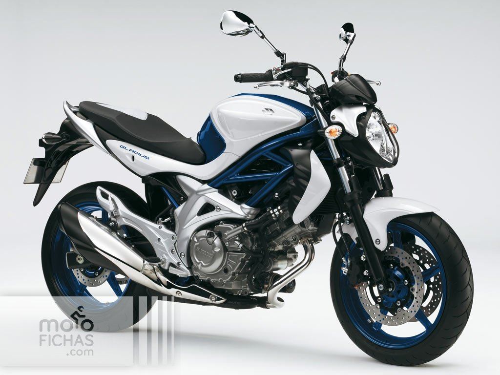

Susuki GladiusV2 650cc
Desde su nacimiento en 2009, la Gladius entró en el mercado como un modelo rompedor, diferente al resto.
Manteniendo el equilibrio característico de las naked, su diseño moderno le ha supuesto un elevado número de seguidores incondicionales.